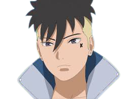

Naruto Uzumaki (Marido)

Boruto Uzumaki (Filho mais velho)

Himawari Uzumaki (Filha mais nova)
Kawaki Uzumaki (Filho adotivo)
Hinata Hyuuga
Hinata Uzumaki (うずまきヒナタ, Uzumaki Hinata, batizada Hyūga (日向)) é a maior personagem de assistência da série. Ela é um membro dos clãs Hyūga e Uzumaki de Konohagakure.
Tendo um temperamento humilde, a falta de auto-confiança de Hinata era refletida em suas habilidades — traços que fizeram seu pai considerar que ela não era adequada para a sua posição como herdeira do clã. A partir de suas observações com relação a Naruto Uzumaki, Hinata encontra tanto um exemplo a seguir para ser mais assertiva, como uma pessoa para amar.
Em sua filiação com o Time Kurenai, ela procura mudar e se tornar forte, mesmo sendo um pouco de cada vez. Eventualmente, ela e Naruto se casam e ela dá à luz a dois filhos, Boruto Uzumaki e Himawari Uzumaki.

Informações Pessoais
Sexo
Feminino
Aniversário
27 de Dezembro
Idade
Parte I: 12-13 anos
Parte II: 16 anos
Boruto: 32-33 anos
Altura
Parte I: 147.3 cm-148.3 cm
Parte II: 160 cm
Período em Branco: 163 cm
Peso
Parte I: 37.9 kg-38.2 kg
Parte II: 45 kg